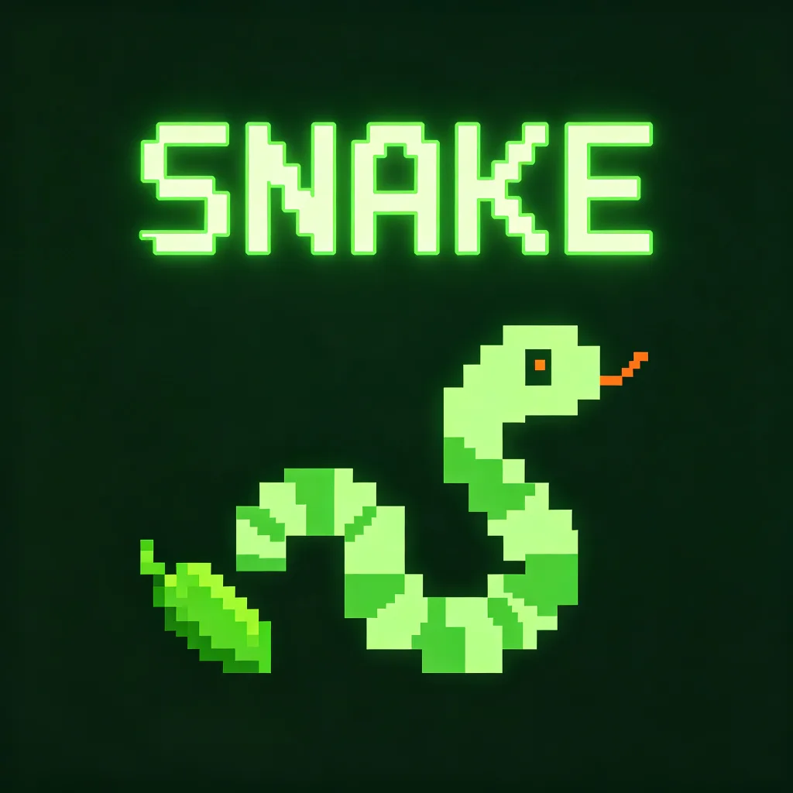

Vibe Coding / PROJECT 14
贪吃蛇
贪吃蛇 · Snake Game
一局复古街机小挑战。控制小蛇收集食物，避开碰撞，刷新自己的最高分。
- ROLE
- 交互体验与 AI 辅助构建
- TIME
- 项目年份待确认
- TOOLS
- 原生网页、AI 辅助编码；详见项目说明
- TYPE
- Interactive experiment
- STATUS
- Playable prototype

01 / OVERVIEW
Overview
一款复古风格的贪吃蛇小游戏，用原生 JavaScript + Canvas 开发。暗绿色调配合发光效果，致敬经典街机游戏。支持键盘方向键和 WASD 控制，移动端支持虚拟按键，带有分数记录和最高分本地存储。下方即可直接开始游戏。
02 / INTERFACE & INTERACTION
Interface & interaction
- 类型：互动小游戏 / 原生 JavaScript + Canvas
- 玩法：方向键控制小蛇，吃到绿色食物得分，撞墙或撞到自己游戏结束
- 特性：分数系统 / 最高分本地存储 / 暂停继续 / 移动端虚拟按键
- 风格：复古街机 · 暗绿色调 · 发光效果
- 开发：AI 辅助开发（Vibe Coding）
03 / PROTOTYPE
Prototype
演示在独立游戏页面打开。本地进度保存在当前浏览器，清理浏览器数据会移除存档。
04 / SCOPE & NEXT QUESTIONS
Scope & next questions
以实际可玩的原型呈现交互与视觉决策。本页不把完成原型等同于市场验证，也不提供未经证实的玩家数量、留存或商业结果。
CONTINUE EXPLORING